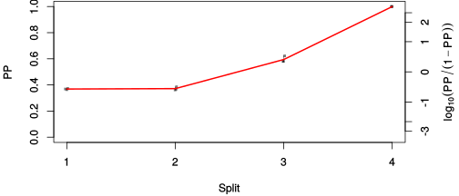

| chain # | burnin | subsample | Iterations (remaining) | command line | subdirectory | directory |
|---|---|---|---|---|---|---|
| 1 | 10000 | 1 | 90000 | /home/willemse/software/bali-phy-3.0-beta2/bin/bali-phy cat_E6_E7_AA_red3_v2_BetaGamma_v1_sorted.fas -s 62681 -n BetaGamma_c1 | BetaGamma_c1-1 | /home/willemse/data/trees/BAli-Phy |
| 2 | 10000 | 1 | 90000 | /home/willemse/software/bali-phy-3.0-beta2/bin/bali-phy cat_E6_E7_AA_red3_v2_BetaGamma_v1_sorted.fas -s 53537 -n BetaGamma_c2 | BetaGamma_c2-1 | /home/willemse/data/trees/BAli-Phy |
| 3 | 10000 | 1 | 90000 | /home/willemse/software/bali-phy-3.0-beta2/bin/bali-phy cat_E6_E7_AA_red3_v2_BetaGamma_v1_sorted.fas -s 45643 -n BetaGamma_c3 | BetaGamma_c3-1 | /home/willemse/data/trees/BAli-Phy |
| P(data|M) = -3465.835 +- 0.107 | Complete sample: 37 topologies | 95% Bayesian credible interval: 12 topologies |
Phylogeny Distribution

| Partition support: Summary |
| Partition support graph: SVG |
{kind=link}
| 50% consensus | Newick (+PP) | SVG | |||||
| 66% consensus | Newick (+PP) | SVG | |||||
| 80% consensus | Newick (+PP) | SVG | |||||
| 90% consensus | Newick (+PP) | SVG | |||||
| 95% consensus | Newick (+PP) | SVG | |||||
| 99% consensus | Newick (+PP) | SVG | |||||
| 100% consensus | Newick (+PP) | SVG | |||||
| MAP | Newick (+PP) | SVG | |||||
| greedy | Newick (+PP) | SVG |
{kind=link}
{kind=link}
{kind=link}
{kind=link}
{kind=link}
{kind=link}
{kind=link}
{kind=link}
Alignment Distribution
Partition 1
| Diff | Min. %identity | # Sites | Constant | Informative | ||||
|---|---|---|---|---|---|---|---|---|
| Initial | FASTA | HTML | Diff | 4.15% | 313 | 1 (0.319%) | 69 (22%) | |
| Best (WPD) | FASTA | HTML | AU | 22% | 347 | 33 (9.51%) | 75 (21.6%) |
Mixing
{kind=link}
{kind=link}
| burnin (scalar) | ESS (scalar) | ESS (partition) | ASDSF | MSDSF | PSRF-CI80% | PSRF-RCF |
|---|---|---|---|---|---|---|
| 784 | 5002 | 3574.438 | 0.011 | 0.024 | 1.001 | 1.009 |
Projection of RF distances for the first 3 chains3D | Variation of split PPs across chains |
Scalar variables
| Statistic | Median | 95% BCI | ACT | ESS | burnin | PSRF-CI80% | PSRF-RCF |
|---|---|---|---|---|---|---|---|
| prior | -224.9 | (-259.6, -197) | 42.83 | 6304 | 550 | 1 | 0.9952 |
| prior_A1 | -204 | (-236.4, -177.3) | 16.36 | 16505 | 296 | 1 | 1 |
| likelihood | -3450 | (-3467, -3431) | 14.23 | 18967 | 261 | 0.9997 | 0.9989 |
| logp | -3675 | (-3703, -3652) | 53.98 | 5001 | 410 | 1 | 0.994 |
| Heat.beta | 1 | ||||||
| Scale1 | 3.279 | (1.387, 6.325) | 1.01 | 267386 | 159 | 0.9998 | 1.001 |
| S1.F.pi.A | 0.06717 | (0.05224, 0.08315) | 7.765 | 34771 | 370 | 1 | 1 |
| S1.F.pi.R | 0.06824 | (0.05256, 0.08498) | 7.751 | 34835 | 248 | 0.9999 | 1.003 |
| S1.F.pi.N | 0.0299 | (0.02014, 0.04035) | 7.907 | 34146 | 758 | 1 | 1.001 |
| S1.F.pi.D | 0.03665 | (0.02562, 0.04926) | 8.577 | 31479 | 366 | 1 | 0.9976 |
| S1.F.pi.C | 0.06201 | (0.04515, 0.08038) | 7.912 | 34124 | 156 | 0.9995 | 1 |
| S1.F.pi.Q | 0.03874 | (0.02838, 0.04987) | 7.788 | 34669 | 186 | 1 | 0.9975 |
| S1.F.pi.E | 0.06462 | (0.04976, 0.0805) | 8.515 | 31707 | 371 | 0.9999 | 1.001 |
| S1.F.pi.G | 0.07513 | (0.05646, 0.09471) | 9.139 | 29545 | 341 | 1 | 1.001 |
| S1.F.pi.H | 0.02373 | (0.01502, 0.03393) | 7.899 | 34182 | 559 | 1 | 0.9979 |
| S1.F.pi.I | 0.04759 | (0.03565, 0.06087) | 8.708 | 31005 | 215 | 1.001 | 0.9995 |
| S1.F.pi.L | 0.125 | (0.1032, 0.148) | 7.86 | 34349 | 264 | 0.9999 | 0.9987 |
| S1.F.pi.K | 0.033 | (0.02318, 0.0439) | 8.355 | 32314 | 375 | 1 | 1.009 |
| S1.F.pi.M | 0.01114 | (0.005756, 0.01739) | 8.051 | 33538 | 601 | 1 | 0.9996 |
| S1.F.pi.F | 0.05089 | (0.03714, 0.06594) | 8.142 | 33162 | 349 | 1 | 0.9935 |
| S1.F.pi.P | 0.03771 | (0.02543, 0.05156) | 8.222 | 32837 | 463 | 1 | 1.003 |
| S1.F.pi.S | 0.05553 | (0.04239, 0.06964) | 8.119 | 33255 | 258 | 1 | 0.9962 |
| S1.F.pi.T | 0.05025 | (0.03744, 0.06408) | 8.009 | 33713 | 469 | 0.9998 | 1.005 |
| S1.F.pi.W | 0.01215 | (0.005461, 0.0205) | 8.053 | 33529 | 443 | 1 | 1.001 |
| S1.F.pi.Y | 0.04443 | (0.03101, 0.05864) | 7.589 | 35579 | 523 | 1 | 1.001 |
| S1.F.pi.V | 0.06004 | (0.04619, 0.07473) | 8.061 | 33493 | 172 | 1 | 1 |
| I1.RS07.meanIndelLengthMinus1 | 5.03 | (2.998, 7.736) | 4.844 | 55734 | 178 | 0.9999 | 0.9999 |
| I1.RS07.logLambda | -4.298 | (-4.787, -3.87) | 3.561 | 75825 | 297 | 0.9999 | 1.003 |
| |A1| | 348 | (342, 358) | 27.54 | 9804 | 784 | 0.8571 | 0.9959 |
| #indels1 | 23 | (19, 28) | 19.77 | 13656 | 215 | 0.8333 | 1.001 |
| |indels1| | 142 | (132, 161) | 8.088 | 33382 | 404 | 0.9524 | 0.9999 |
| #substs1 | 574 | (562, 580) | 6.313 | 42768 | 384 | 0.9091 | 0.9988 |
| Scale1*|T| | 3.985 | (3.608, 4.38) | 2.242 | 120407 | 128 | 0.9998 | 0.9991 |
| |A| | 348 | (342, 358) | 27.54 | 9804 | 784 | 0.8571 | 0.9959 |
| #indels | 23 | (19, 28) | 19.77 | 13656 | 215 | 0.8333 | 1.001 |
| |indels| | 142 | (132, 161) | 8.088 | 33382 | 404 | 0.9524 | 0.9999 |
| #substs | 574 | (562, 580) | 6.313 | 42768 | 384 | 0.9091 | 0.9988 |
| |T| | 1.216 | (0.4722, 2.21) | 1 | 270003 | 129 | 0.9999 | 1 |